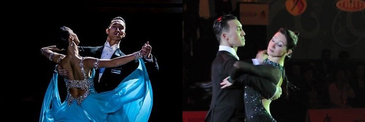

Frame and Elbows
26 February 2016
If you dance Standard, you have undoubtedly been told countless times to keep your shoulders down, elbows up, and have a straight frame, and in Amateur competitions, having a good frame is one of the easiest ways to get seen and get marked, but do you really know what a perfect frame is? When is it not enough? When is it too much? These are the questions we will examine today. Equally important, but not to be covered today, is posture. We'll leave that for another time.
Pictured above is Victor Fung, Professional Standard World Finalist, who is generally considered to have the best frame in the world.
How to Produce a Correct Frame
| Man | 1 | Elbows |
| The general rule is that the Man's elbows should be raised to the point where his upper arms are parallel with the ground, or perhaps only slightly downward to make a smooth curve from his neck to his elbows. Of course, if he is dancing with a Lady who is much shorter than him, he will have to have a sub-optimal frame in order to accommodate her, and the elbows will need to be lowered. | ||
| 2 | Parallel Shoulders | |
| Looking at it from the top, the Man's shoulders should be parallel to the Lady's (see the visualisation below). | ||
| 3 | Straight Line from Right Shoulder to Left Elbow | |
| There should be a straight line from the right shoulder to the left elbow, not from elbow to elbow. The Right elbow needs to come forward, and should not be in line with the left elbow. The reason for this is that space needs to be made for the Lady to rest in. The shoulder join divides the body in half, front to back. This means that in front of the shoulder, there is one and a half body-widths that need to fit: half of the Man's, and all of the Lady's. The space for half of the Man's body is created by moving the elbow forward, and the space for the Lady's body is created by extending the forearm beyond that. Take a look at the image of Victor Fung, above, and notice that his right elbow does exactly this. |
| Lady | 1 | Elbows |
| Whereas the Man should typically not allow his elbows to rise higher than his shoulders, it is sometimes appropriate for the Lady to have her elbows higher than her shoulders, especially when her partner is significantly taller. Even with a shorter partner, however, the Lady's elbows should never fall below the line of her shoulders, and at the very minimum her upper arms should be parallel to the ground. | ||
| 2 | Parallel | |
| Looking at it from the top, the Lady's shoulders should be parallel to the Man's (see the visualisation above). |
||
| 3 | Straight Line from Right Shoulder to Left Elbow | |
| There should be a straight line from the right shoulder to the left elbow, not from elbow to elbow. The Right arm is shaped into a gentle curve and goes forward from the shoulder, so the hand may rest in the Man's hand, while the left hand is placed gently on the Man's upper right arm. |
Common Mistakes
| Man | 1 | Droopy Elbows (try harder) |
| The most common problem is that the elbows droop too low, causing a sagging look, which is okay for social dancing, but not for competitions. | ||
| 2 | Lifting the Shoulders (don't try so hard) | |
| When, in order to try to lift the elbows, the shoulders are lifted instead, the dancer will achieve a hunched look. Admittedly, it is unnatural to lift the elbows right out to the side while keeping the shoulders down, so our bodies need practice to get used to the position. This is a problem for both the Man and the Lady. | ||
| 3 | Left Elbow too Far Forward (try harder) | |
| Remember that there is supposed to be a straight line from the right shoulder to the left elbow? Well the third way the Man most often underdoes the frame is by allowing the left elbow to come forward into the Lady's space, causing her to rotate to an unnatural position. | ||
| 4 | Right Elbow too Far Back (don't try so hard) | |
| One of the most common ways the Man overdoes his frame is by trying to make a straight line from elbow to elbow. As you have read above, this decreases the space the Lady has, and does not allow for proper dancing. The right elbow should remain in front of the Man's body. | ||
| Lady | 1 | Hanging on the Man (try harder) |
| Perhaps the most devastating error a Lady can make is to rest too much of her weight on her partner's frame, weighing down not only in the hands but also the elbows. Even though they may appear to be resting on the Man, they must always be weightless. By weighing down on her partner, the Lady will not only deteriorate his frame, but inhibit his dancing and possibly cause him muscle strain. | ||
| 2 | Lifting the Shoulders (don't try so hard) | |
| When, in order to try to lift the elbows, the shoulders are lifted instead, the dancer will achieve a hunched look. Admittedly, it is unnatural to lift the elbows right out to the side while keeping the shoulders down, so our bodies need practice to get used to the position. This is a problem for both the Man and the Lady. | ||
| 3 | Droopy Left Elbow (try harder) | |
| The Lady's left elbow extends beyond the Man's, and often has nothing underneath it supporting it. It must be held at least shoulder level, if not higher, for any lower than this will cause the topline to look broken and sagged. | ||
| 4 | Pulling away the Right Side (don't try so hard) | |
| A common occurrence is for the Lady to pull her right side away from the Man so they are no longer parallel, which causes not only a deformed frame, but also problems in the lower body. This problem is often caused by the Lady trying too hard to stretch to the left, however, sometimes the problem is that the Man's left arm is not kept back enough (see Man's mistake No. 3) |
Are you confused on how to "try harder" in some aspects while at the same time "don't try so hard" in other aspects? No problem! This one minute clip draws a perfect analogy between dancing and surfing, that is sure to clear things up!
On a final note: frame is one of the most important things in competitive Standard, but it is only half of the picture. Posture is equally as important in creating a beautiful topline, so check out this BGBB article on posture!